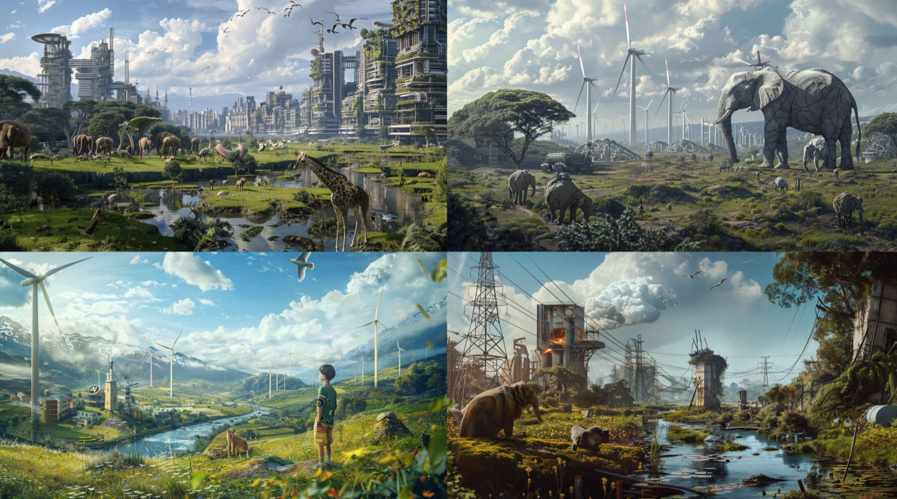

Free AI Website SoftwareCarlotta Hylkema, Jorge DLM, Jorge Munoz, Manuja Agnihotri, Marius Schairer, Nuria Valsells, Oliver Lloyd & Sophie Marandon
Why this Cluster?
We as a group have similar interests that we can potentially combine to create a collective narrative.
What are we working on?
Manuja: To generate electricity and store it through sustainable methods that can be created with low technology equipment easily available in households.
Marius & Nuria: The Project is questioning how we use methodologies/technologies, to change the perception and engagement of citizens within their surroundings.
Jorge DLM & Sophie: Using Emergent Tech to envision preferable futures in Policymaking and Mobility
Oliver and Carlotta: the energy transition and how we can help people feel empowered and enabled to shift their habits towards energy consumption reduction through household interactions and technologies.
The possible topics to work with are -
City collaboration
Built environments
Participation behavior
Sustainable Energy
Artisan inclusion
Tech and foresight
The possible narratives could be -
Responsible Tech optimism
People focused tech optimism
People & Planet focused design
Emergent tech
Powering technology sustainably
What is the criteria?
The goal is to reach out to communities or ecosystems that can help us communicate our collective idea or vision of city planning/development, emerging technologies and energy consumption & generation. We plan on collaborating as a group with our projects to showcase our outcomes and narrate it with stakeholders interested for now and for the future.

Finding common ground between our clusters' different visions of the future through a short collective storytelling exercise
Game:
Collective story telling exercise, where one person starts a story about a vision of the future and is continued on by the next person until every person has spoken. each person must continue the story with 10 words or less. Once the story is finished, it is used as an image prompt for a generative AI tool like midjourney, or stable diffusion 3, to prompt class discussion to find a shared vision of the future that we can all agree on (or most of us)
15/04/2024 Collective storytelling
We want a future based on social justice for all beings and non being agents. that is honest and uses technology to help each other. that merges technology and passive processes within planetary boundaries. Where decision making power is balanced. That takes into account the impact on the marginalised. That follows a more circular structure of care. Where there is equality and no fear of violence. Because diversity is celebrated instead of attacked, and technology is used for the benefit of all living beings, and always taking into consideration the values of degrowth, and being aware of the effects on people and planet in the long term by generating energy sustainably. To create a circular habitat for all species. But then something awful happens...and we survive......
22/04/2024 Personal Objectives
Energy Independence
The Concept - To create multiple different low tech sustainable energy generating 'products' to power different projects within the cluster. To hold a workshop during the MDEFEST to methodically step by step show how to create it themselves from the low-tech equipment usually easily available at homes.
Different 'Products'
- CD + Copper wire - DIY Solar Panel (sunlight)
- DIY Recycled Material Wind Turbines (windy)
- Cycling motor (unstable)
- Stepping weight to electricity
- Soil Battery (not powerful enough)
The project seeks to make sustainable energy generation more accessible to communities by introducing simple and affordable innovations. This empowers people to generate electricity at home, reducing dependence on centralized power grids and promoting self-reliance. By using readily available technologies, the project advocates for a decentralized approach to energy production. Additionally, exploring energy storage options emphasizes the goal of enabling individuals to utilize renewable energy for their future requirements. This initiative aims to create a more sustainable and resilient energy ecosystem within communities.
Free AI Website Software